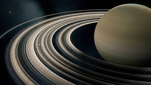

Saturn – gazowy olbrzym, szósta planeta Układu Słonecznego pod względem odległości od Słońca, druga po Jowiszu pod względem masy i wielkości. Charakterystyczną jego cechą są pierścienie, składające się głównie z lodu i w mniejszej ilości z odłamków skalnych; inne planety-olbrzymy także mają systemy pierścieni, ale żaden z nich nie jest tak rozległy ani tak jasny. Według danych z października 2019 roku znane są 83 naturalne satelity Saturna, co czyni go liderem wśród planet z największą liczbą księżyców. Promień Saturna jest około 9 razy większy od promienia Ziemi. Chociaż jego gęstość to tylko jedna ósma średniej gęstości Ziemi, ze względu na wielokrotnie większą objętość masa Saturna jest dziewięćdziesiąt pięć razy większa niż masa Ziemi.